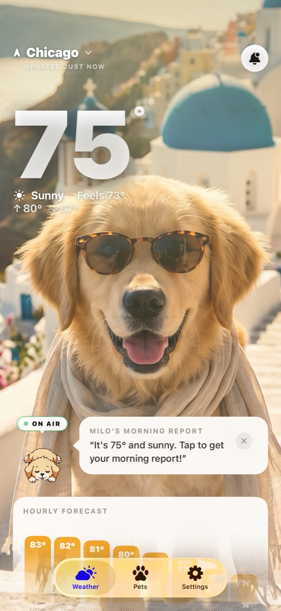

WeatherPets vs the Apple Weather App: Which Should You Use?
Here is the honest truth up front: the Apple Weather app is genuinely good, it is free, and it is already sitting on your iPhone. So the real question is not which one is better, it is what each one is for. They are not really competing for the same job, and plenty of people happily keep both.
What the Apple Weather app does well
Apple's built-in Weather app is a polished, reliable forecast that comes free with iOS. It covers the essentials and then some: a clean hourly and 10-day forecast, home and lock screen widgets, next-hour precipitation that tells you when rain will start or stop down to the minute, severe weather notifications for events like tornadoes and flash floods, and air quality data. Apple's own overview of Weather app features and data sources lays out exactly what is available in your region.
If all you want is accurate, no-friction weather with nothing extra to install, Apple Weather is hard to beat. It is the sensible default, and we would never tell you to delete it.
So where does WeatherPets fit?
WeatherPets is not trying to out-spec Apple on raw meteorology. It is built around a different feeling: making the daily weather check something you actually look forward to, starring your own real pet. You set up your actual dog, cat, guinea pig, or bunny, and the app generates that specific pet restyled for every condition, then has it deliver the day's forecast in character.

Crucially, WeatherPets still covers the practical basics you would miss if you switched off Apple Weather:
- Home and lock screen widgets, with your pet plus the weather at a glance.
- Live Activities that track conditions in real time on your lock screen and Dynamic Island.
- A full 10-day forecast with live tracking.
- Morning and evening reports, a short daily briefing from your pet.
- A gallery of your pet restyled for sun, rain, snow, storms, and night, plus its own profile.
The difference is personality. Apple Weather tells you it is 84 and sunny. WeatherPets has your golden retriever tell you, with a sunbeam scene to match, which is a small thing that turns a chore into a little dose of joy every morning.
At a glance
Here is how the two stack up on the things people actually compare.
| Apple Weather | WeatherPets | |
|---|---|---|
| Pet on screen | None; a clean, data-first forecast | Your real pet, AI-generated into scenes that match the live weather |
| Weather data source | Apple's built-in weather service | Apple WeatherKit, the same forecast engine |
| Widgets | Home and lock screen widgets | Small, medium, and large home screen widgets starring your pet |
| Severe weather alerts | Notifications for events like tornadoes and flash floods | Severe weather alert notifications |
| Personality & reports | None; straight data | Morning and evening reports in your pet's voice |
| Price | Free, preinstalled with iOS | Free download; full features $9.99/mo or $34.99/yr |
| Platforms | Every iPhone, out of the box | iOS 17+ (iPhone) |
But is the forecast still accurate?
It is a fair worry: a cute app must be skimping on the actual weather, right? Not here. WeatherPets is a real forecast app underneath the charm, with current conditions, a 10-day outlook, and live tracking. The pet is the wrapper, not a replacement for the data. So choosing it is not a trade of accuracy for personality, you keep the practical forecast and gain the daily moment with your pet on top. That is the difference between this and a novelty app that looks fun for a day and then goes unopened.
The quick version
- Apple Weather is the reliable, free, built-in default. Best for pure forecasting with zero setup.
- WeatherPets is the delightful daily check-in starring your real pet, with widgets and Live Activities so it still handles the essentials.
- They coexist nicely. Many people keep Apple Weather for deep radar-style detail and put WeatherPets front and center because it is the one they enjoy opening.
Which one is right for you
Stick with Apple Weather if you want nothing more than an accurate forecast and you are happy with a clean, no-frills default. It is already there and it does the job well.
Add WeatherPets if you are a pet owner who wants checking the weather to feel like a moment with your dog or cat, not a glance at a chart. You still get widgets and real-time tracking, but the whole thing is wrapped around your pet. See how the wider field compares in our roundups of the top 5 weather apps for iPhone and the cutest weather app on iOS.